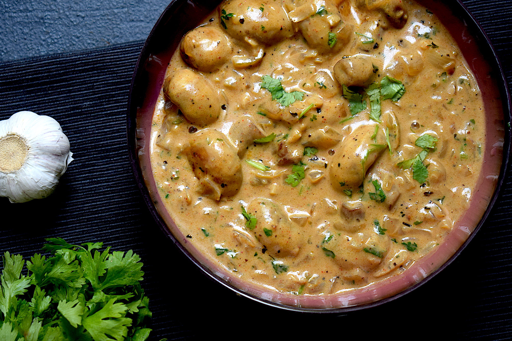

Detailed Recipe

Multi-Grain Pancakes Recipe
Pancakes are the most convenient of all the meals that you can make for breakfast. This Continental recipe is quite easy to prepare at home because it involves all the fuss-free ingredients in its making.
View Recipe
10-Minute Quesadillas
Quesadillas are the perfect quick meal. Enjoy this vegetarian quesadilla recipe in under 10 minutes! Recipe yields 1 quesadilla (3 slices), so multiply as necessary.
View Recipe

Mushroom Tacos
For a healthy vegan dinner that's high in protein and fibre, give these spicy mushroom tacos a go. The taco shells are made with chickpea flour, which keeps them gluten-free
View Recipe